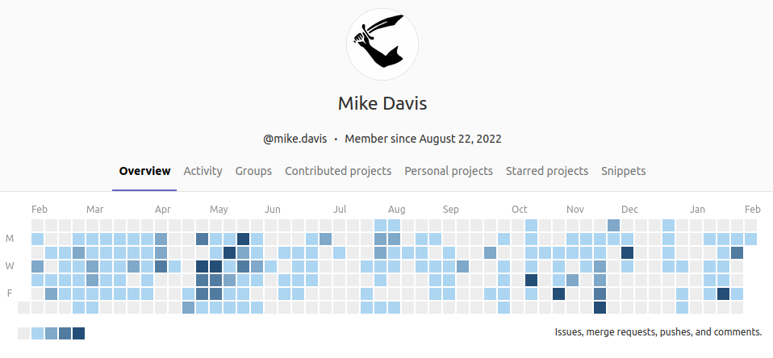

|
|
Michael "Mike" Davis
Innovation lead ⚛️· · AI Developer 💻 · Researcher 🔬 · Generalist 🌐
Currently Developing Agentic Applications for the Next Generation.
📧 mike.davis@posteo.net
🔗 LinkedIn
|
What you should know about me...
1. I combine imagination, expertise, and initiative to bring opportunities to life!
2. I relentlessly pursue excellence
3. I have the skills to solve your problems (or I can get them in short order)
Current Interests
- AI Agents and Application Layer Development of Large Language Model powered AI tools
- Theory of Knowledge & Wisdom
- Accessible Autonomy
- Disruptive Applications & New Product Development
- Secure & Private Software
- 3D-Printing
Background
I have hands-on experience in multiple fields:
- Software Development - Artificial Intelligence, Full Stack Web, Operating Systems, and Linux System Adminstration
- Manufacturing - Chemical & Pharmaceutical
- Engineering - Project & Process
- Research and Development - From benchtop to production! - multiple fields
- Business - Networking, Pitching, Sales, Business Development, and Proposal Writing
My background has prepared me to solve your problems, no matter the kind.
Take a look at my resume
Education
Some highlights of stuff I've made:
- Miscellaneous Agentic Systems - I've created various agentic systems to help me with my work, they include email monitoring agents, gitlab agents, research agents, etc. with plans for many more. Currently building command and control agentic systems.
- ARCHIE - a Personal, Private, AI Assistant for business. ARCHIE is an genAI self-hosted genAI software suite enabling business users to use proprietary and protected information when interacting with their own personal AI assistant.
- archie-cli - a bootstrappable, extensible, rich command-line deployment and management tool for ARCHIE end-users.
- sam - short for "Sphagetti and Meatballs", sam is a best-in-class source code and binary management system for the Microsoft Deployment Toolkit (MDT) implemented as a git plugin.
- simonides - a financial assistant inspired by the famous fiduciary, Simonides, from the epic novel and movie, Ben-Hur . Simonides helps you run analyses on your investments, informed by post-modern portfolio theory , helping you figure out how to optimize your 401(k) using the power of algorithms!
- mods - An extended linux deployment system designed to create idempotent operating systems at boot.
- Custom Hypervisors - Customized ESXi hypervisors for embedded systems.
- Pharma Lab - A software suite for pharmaceutical research labs to allow for digitized experiment reporting and data analysis.
Unfortunately I am under obligation and thus not allowed to show off a lot of my current and prior work! It's hush hush... 🤫
Here's what my internal company gitlab contributions look like:

Some favorite things...
Lists of some of my favorite things, you might find something useful too...
Tools I Cut My Teeth On
- caffeine
- vertical browser tabs
- retro synthwave
- Neovim (LazyVim), wiki-links
- ollama & llama.cpp
- Python, LangChain, LangGraph, FastAPI, Gradio, pdm, poetry
- Javascript, React
- HTML/CSS/HTMX
- bash, ssh, cron, docker, devcontainers
- man pages & tldr pages
- Prusa 3D Printer
- virtualization
- search engines
- git & git-lfs
- impact driver/chop saw
- Calibre
- nfs shares
- pdfgrep
- Archive.is
- the 5 whys root cause analysis
Websites I Frequent
Books I Enjoy
- The Moon is a Harsh Mistress
- The Hitchiker's Guide to the Galaxy
- Dirk Gently's Holistic Detective Agency
- Don Quixote
- The Fall of Reach
- Candide
- Robin Hood
- John
- Ben Hur
- Staying Smart in a Smart World
- Atomic Habits
- 7 Habits of Highly Effective People
- 4,000 Weeks, Time Management for Mortals
Documentaries I Appreciate
About This Website
Sometimes HTML/CSS is all that is needed 😇.